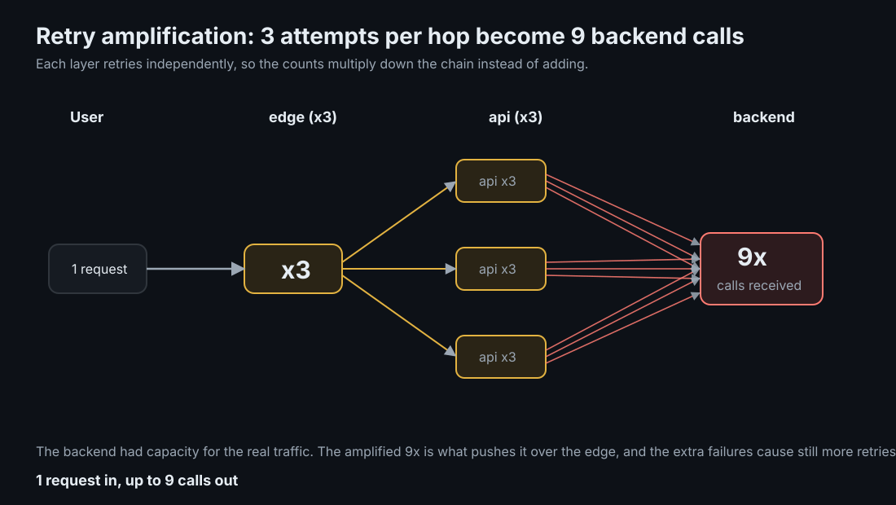
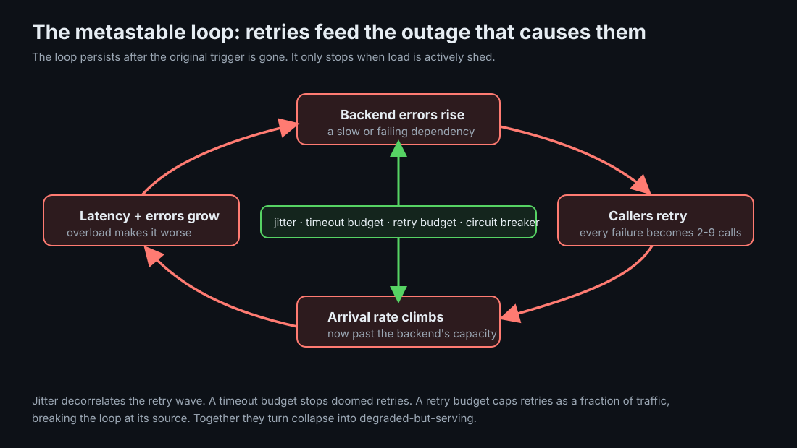

Retry Amplification and Timeout Budgets
A retry makes one request more likely to succeed. Stacked at every hop of a call chain, retries multiply load, and against a struggling dependency that multiplication becomes a self-inflicted outage that outlives its own trigger.
TLDR
- Retries multiply, they do not add: three attempts at each of two hops is up to nine calls at the bottom, not six.
- A slow dependency plus blind retries is a feedback loop: errors cause retries, retries raise load, load causes more errors. This is a metastable failure, and it persists after the original fault is gone.
- Bound the wait, not just the count: a timeout budget propagated down the chain stops a hop from starting an attempt it cannot finish in time.
- Cap retries as a fraction of traffic: a retry budget lets retries help during isolated failures but refuses to let them become the load during a broad one.
Mental Model
Think of a request passing through several layers, each of which retries its next hop on failure. Retries at one layer are independent of retries at the layers above, so the attempt counts compound. If every layer retries up to three times, one user request can become nine calls at the bottom of the stack. The deeper and more aggressive the retry configuration, the larger the multiplier.
That multiplier is harmless when the dependency is healthy and has spare capacity. It becomes dangerous at exactly the moment retries are most tempting: when the dependency is already struggling. Then the amplified load is aimed straight at the thing least able to absorb it.

Ground-Up Explanation
Why retry at all
Failures come in two flavors. A transient failure, a dropped packet, a brief leader election, a single overloaded node, will likely succeed on a second attempt, so retrying is correct. A persistent failure, a bad request, a dependency that is down hard, will fail again no matter how many times you try, so retrying only wastes work. The trouble is that a caller usually cannot tell which one it is looking at, and the safe-seeming default, "retry a few times," treats every failure as transient.
Retries require idempotency
Retrying a read is free. Retrying a write that already partially succeeded can double-charge, double-ship, or double-post. Any retry policy is implicitly a claim that the operation is safe to repeat, which is why idempotency keys and naturally idempotent operations are prerequisites for retries, not optional extras.
The multiplication is the mechanism
A single retrying layer turns N failures into up to N times the attempts. Two layers turn it into N squared. Because each layer measures success and failure locally, no layer sees the total call count it is helping to produce. The amplification is an emergent property of the chain, invisible from inside any one service.
Concept Deep Dive
Metastable failure: the loop that sustains itself
The dangerous case is not a spike that passes. It is a feedback loop. A dependency starts returning some errors. Its callers retry. The retries raise the arrival rate. The higher rate pushes the dependency past its capacity, so latency and error rate climb. The higher error rate produces still more retries. The system is now in a stable-but-bad state that no longer needs the original trigger to keep going: remove the initial fault and the retry load alone holds the outage open. This is a metastable failure, and it is why some outages do not end when the triggering event does.

Synchronized retries and jitter
When many callers fail at the same instant, a fixed backoff makes them all retry at the same later instant too. The result is a pulsing second wave, a thundering herd on a schedule. Jitter randomizes each backoff so the retries spread out instead of stacking. Full jitter, sleep = random(0, base × 2^attempt), is the simplest form that works well: it keeps exponential growth on average while destroying the synchronization.
Timeout budgets and deadline propagation
A per-attempt timeout bounds one call. It does nothing to bound the total time a request spends being retried across a chain. A timeout budget is an end-to-end deadline set at the entry point and passed down with the request, shrinking as time is spent. Each hop checks the remaining budget before starting an attempt, and refuses to begin one it cannot finish in time. Doomed retries are never sent, and the tail latency of the whole chain is capped at the budget instead of at the sum of every hop's independent timeouts.
Retry budgets
The most direct defense treats retries as a scarce resource. A retry budget caps retries at a fraction of the request rate, commonly with a token bucket: each request adds a little budget, each retry spends some, and when the budget is empty retries are refused. During an isolated failure the budget is nearly full and retries proceed normally. During a broad failure, when everything is retrying at once, the budget empties and retries are throttled precisely when they would otherwise become the load. This is the Google SRE "retry budget", and it breaks the metastable loop at its source.
Where circuit breakers fit
A circuit breaker trips open when a dependency's error rate crosses a threshold, failing fast for a cool-off period instead of trying at all. It is a coarser, faster-acting cousin of the retry budget: the budget throttles retries smoothly, the breaker stops them abruptly. They compose, and which one matters more is workload-dependent; that trade-off is its own topic.
Implementation Details
- Retry at one tier, not every tier. Pick a single layer to own retries and make the others fail fast. This alone collapses the multiplier from N-to-a-power back toward N.
- Always jitter backoff. Fixed or purely exponential backoff without randomization reintroduces synchronization.
- Propagate a deadline, not just a timeout. Carry the remaining budget in request metadata so every hop makes the same time-based decision.
- Cap retries as a ratio of traffic. A token-bucket retry budget is a few lines of code and is the single most effective guard against a storm.
- Only retry idempotent operations, or make them idempotent first with an idempotency key.
- Shed load as the escape hatch. When budgets are exhausted, rejecting requests quickly is healthier than accepting work you cannot complete.
Production examples
Retry storms show up at dependency boundaries: service-to-service RPCs, SDK calls to third-party APIs, database failover windows, cache misses that fall through to an overloaded origin, and background workers retrying the same failed job at the same time. The first question is not "how many retries should we use"; it is "which layer is allowed to retry at all."
A good default is one retry owner per request path. For example, the edge gateway may retry a safe read once, while downstream services fail fast and propagate the remaining deadline. For an external API call, the service client may own retries with jitter and an idempotency key, while the job runner only reschedules the whole job after a longer delay. Avoid stacking retries in the client library, service mesh, application code, and queue worker at the same time.
Measure retry amplification directly. Compare user requests to downstream attempts, or job executions to provider calls. A ratio near 1 means the system is mostly doing original work; a rising ratio means retries are becoming the workload.
Lab Evidence
The runnable lab is labs/reliability/retry-storm: a real HTTP chain load → edge → api → backend, with open-loop load offered below the degraded backend's capacity so that only amplification can push it over. The load reporter prints the amplification factor directly as backend calls divided by client requests.
make break
Naive: three blind attempts per hop, fixed backoff, no budget. Amplification climbs toward 9x and success collapses.
make test
Fixed: full jitter, an end-to-end timeout budget, and a 20% retry budget. Amplification stays near 1x and success recovers.
reported metric
AMPLIFICATION = backend calls / client requests, measured, not asserted.
Measured: the same chain, two retry policies
Real run on 2026-07-08, 60 req/s offered for 20s against a backend degraded to 90 req/s capacity with a 40% base error rate:
naive (storm):
succeeded: 273 / 1200 (22.8%)
backend calls: 8763
AMPLIFICATION: 7.30x
latency: p50=1.879s p99=1.884s
fixed (budgeted):
succeeded: 921 / 1200 (76.8%)
backend calls: 1899
AMPLIFICATION: 1.58x
latency: p50=10ms p99=1.103sThe fix improves every axis at once: success from 22.8% to 76.8%, backend load from 7.30x to 1.58x, and p50 latency from 1.88s to 10ms. The fixed p99 sits at ~1.1s because that is where the timeout budget caps it. The storm's exact numbers vary between runs because it is a stochastic feedback loop, but the separation is stable: blind retries collapse the chain, budgeted retries keep the backend under capacity so it stays healthy.
Production Notes
- Amplification is invisible from inside a single service. You need a chain-level view, request counts at each tier or a total-calls-per-user-request metric, to see it before an incident does.
- Client libraries and service meshes often retry by default. Layered on top of application retries, those defaults are a hidden multiplier; audit them.
- A retrying system needs its dependencies to fail fast and cheaply when overloaded. A dependency that holds connections open while dying makes every retry more expensive.
- Test the storm deliberately. It appears only under concurrency against a degraded dependency, which is exactly the condition normal testing avoids.
Code Pointers
| Code | Why it matters |
|---|---|
src/main.go | The proxy retry loop, the token-bucket retry budget, deadline propagation, and the open-loop load generator. |
README.md | Measured storm output, retry-budget explanation, and how to interpret amplification. |
Makefile | The naive and fixed policies side by side as environment overrides; the only difference is jitter, budget, and retry budget. |
compose.yaml | The load, edge, api, and backend services used to reproduce the retry cascade. |
Further Reading & Watching
- Timeouts, retries, and backoff with jitter by Marc Brooker, AWS Builders' Library. The definitive practitioner treatment; the jitter used in the lab comes from here.
- Exponential Backoff And Jitter by Marc Brooker. The original experiment comparing jitter strategies.
- Handling Overload and Addressing Cascading Failures, Google SRE Book. Retry budgets and the anatomy of a cascade.
- Metastable Failures in Distributed Systems by Bronson et al., HotOS '21. The formal frame for the feedback loop.
- Will circuit breakers solve my problems? by Marc Brooker. Why budgets often beat breakers.
- Book: Michael Nygard, Release It! Retry, Timeout, Circuit Breaker, and Bulkhead as named stability patterns.